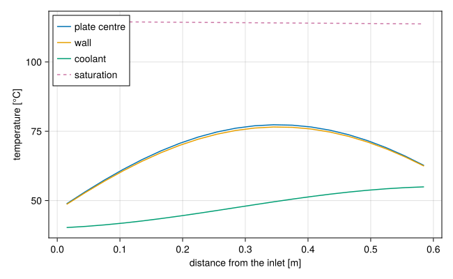

A fuel plate between two channels
Download this tutorial as a Julia script or a Jupyter notebook.
The tutorials so far heated the coolant through a wall at a given temperature. In a reactor the heat comes from the fuel, and the wall temperature is part of the answer. This tutorial builds the basic unit of a plate-fuel core, a fuel plate cooled by water flowing past both of its faces, solves it, and checks it against the thermal-hydraulic limits.
The unit cell
A plate-fuel assembly is a stack of plates with coolant channels between them. If every plate and channel is the same, the stack repeats: each channel cools the plate on its left and the plate on its right, and each plate is cooled by the channel on either side. One channel and one plate, with each face of the channel joined to the opposite face of the plate, stand for the whole stack.
The dimensions are typical of a plate-fuel research reactor, but they describe no particular one.
using STREAMusing STREAM.Components: Pump, HeatExchanger, HeatDiffusion, ChannelAndContactsusing STREAM.Assemblies: inseries, symmetric_plateusing STREAM.Thresholdsusing STREAM.Utilities: cosine_shapeusing ModelingToolkit: @named, mtkcompileL = 0.6 # heated length [m]n = 20 # axial cellsnx = 4 # cells across the platewidth = 0.067 # channel width [m]gap = 0.0024 # channel gap [m]heated_width = 0.063 # width of the fuel meat, heated part of each face [m]thickness = 0.00127 # plate thickness [m]P = 2.5e4 # plate power [W]ṁ = 0.4 # channel flow [kg/s]T_in, p_in = 40.0, 1.7e5 # inlet temperature [°C] and pressure [Pa]geometry = PipeGeometry_rectangular(L, width, gap, heated_width)PipeGeometry
L 0.6 m
Dh 0.004634 m
A 0.0001608 m^2
width 0.067 m
depth 0.0024 m
perimeter wet 0.1388 m, heated 0.126 m
heated_parts (0.063, 0.063) mThe plate
HeatDiffusion conducts heat across the plate in each of $n$ axial slices. Its depth y is the heated width, so that each slice's surface is the heated area of one channel cell. The material here is aluminium throughout, the simplification described in Heat conduction in a fuel plate.
The power is shaped as a cosine along the plate, with a peak 1.4 times the average. cosine_shape gives each axial cell its share, and each share is split evenly across the plate's thickness.
z_edges = range(0.0, L; length=n + 1)shape = repeat(cosine_shape(z_edges, 1.4) ./ nx, 1, nx)@named fuel = HeatDiffusion(; nz=n, nx, Lz=L, Lx=thickness, y=heated_width, rho_s=2700.0, cp_s=900.0, k_s=180.0, power=P, power_shape=shape);The channel
ChannelAndContacts is a channel with a thermal port on each face of each cell. Its wall temperatures come from whatever the ports are joined to, and its heat transfer coefficient from a model, Dittus-Boelter by default. The flow goes down, so gravity is negative along it.
@named ch = ChannelAndContacts(; n, geometry, g=-G_EARTH);symmetric_plate makes the unit cell: it joins the channel's right face to the plate's left face and the channel's left face to the plate's right face, cell by cell.
@named cell = symmetric_plate(ch, fuel);A pump holding the flow fixed and a heat exchanger setting the inlet temperature close the loop. With the flow fixed, the loop has no zero-flow solution to fall into, and the solver needs no guess.
@named pump = Pump(; ṁ0=ṁ)@named hx = HeatExchanger(T_in)connections = [inseries(pump, hx, cell.ch, pump), pump.outlet.p ~ p_in]@named loop = assembly(connections, pump, hx, cell)sys = mtkcompile(loop)sol = solve_steady(sys)sol.retcodeReturnCode.Success = 1Temperatures
All of the plate's power goes into the one channel, so the coolant leaves warmer by $P / (\dot m\,c_p)$:
T_out = sol[sys.cell.ch.T_out]@assert isapprox(P, ṁ * cₚ(H2O, (T_in + T_out) / 2) * (T_out - T_in); rtol=1e-3)T_out54.94927842751397Along the plate, the coolant warms steadily, the wall runs hotter than the coolant by the film drop $q''/h$, and the plate's centre runs hotter than its surface by the conduction drop across half its thickness:
using CairoMakiezc = (z_edges[1:end-1] .+ z_edges[2:end]) ./ 2T_centre = [maximum(sol[sys.cell.fuel.T[i, j]] for j in 1:nx) for i in 1:n]fig = Figure(size=(650, 400))ax = Axis(fig[1, 1]; xlabel="distance from the inlet [m]", ylabel="temperature [°C]")lines!(ax, zc, T_centre; label="plate centre")lines!(ax, zc, sol[sys.cell.ch.T_wall_left]; label="wall")lines!(ax, zc, sol[sys.cell.ch.T]; label="coolant")lines!(ax, zc, sol[sys.cell.ch.T_sat]; label="saturation", linestyle=:dash)axislegend(ax; position=:lt)fig
The power peaks mid-height, but the wall temperature peaks further down: past the middle the flux falls, but the coolant has picked up more heat. The hottest wall is where these two balance.
Safety margins
How far is this plate from the limits? threshold_analysis reads the channel's solved state and applies the correlations we name. Each margin is arranged so that larger is safer, a ratio above 1 or a temperature difference above 0:
margins = threshold_analysis(sol, sys.cell.ch; pipe=geometry, onb = s -> bergles_rohsenow_t_onb(s) .- s.T_wall, osv = s -> q_OSV_saha_zuber(s) ./ s.q_flux, ofi = s -> q_OFI_whittle_forgan(s) / P, chf_mirshak = chfr(q_CHF_mirshak), chf_sudo_kaminaga = chfr(q_CHF_sudo_kaminaga),)margins.ofi4.410760950204546The OFI margin is one number for the channel: its power could rise by this factor before flow instability. The others are per cell, and worst_case finds the smallest and where it is:
for key in (:onb, :osv, :chf_mirshak, :chf_sudo_kaminaga) w = worst_case(margins[key]) println(rpad(key, 18), round(w.value; sigdigits=3), " at cell ", w.cell)endonb 44.7 at cell 13
osv 4.1 at cell 16
chf_mirshak 8.94 at cell 11
chf_sudo_kaminaga 3.61 at cell 11Reading them:
- ONB: the wall stays below the onset of nucleate boiling by this many kelvin at its closest, near the hottest wall.
- OSV and OFI: the power could rise about fourfold before significant void or flow instability. The two are close, as they should be: OSV is where the void that bends the pressure drop curve begins.
- CHF: the critical heat flux is several times the local flux, and far beyond the other limits, as is usual at forced flow and low pressure. Sudo-Kaminaga is the more conservative of the two correlations here.
None of these numbers carries uncertainty factors yet; Margins explains how a safety analysis adds them.
What next
Reactivity insertion with feedback drives the plate's power from the reactor's kinetics, and lets the plate's temperature act back on the power.